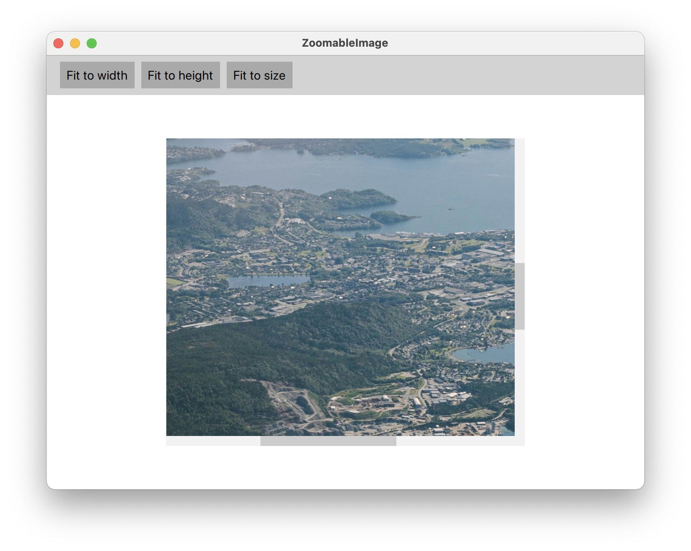
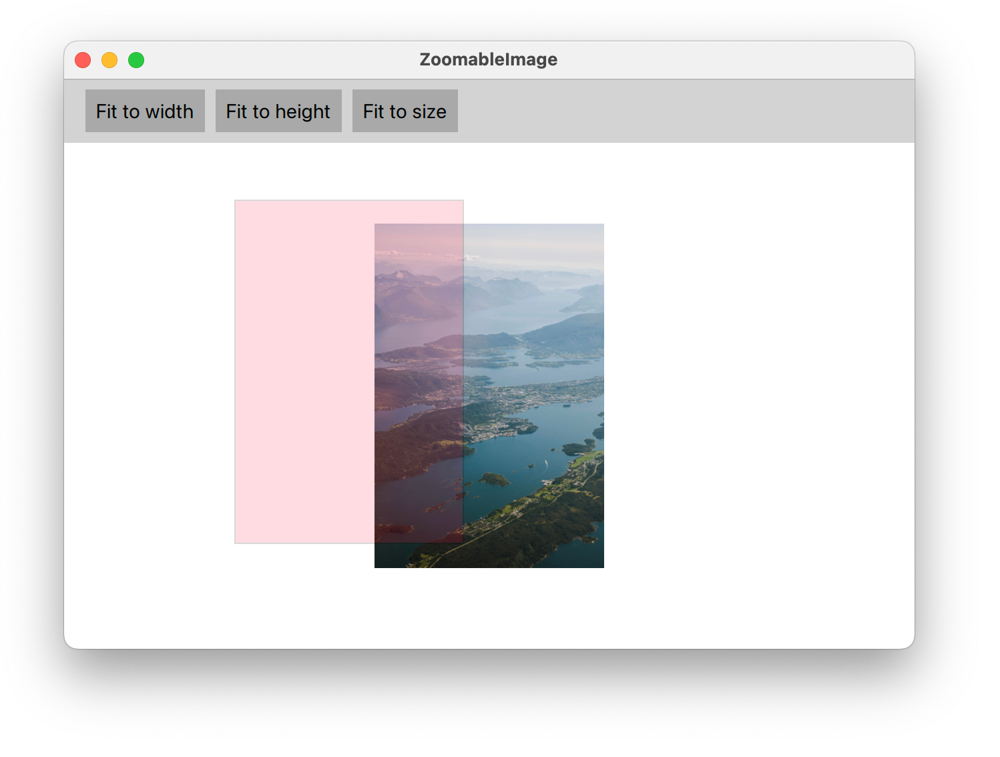

Implementing natural zoom for images
Problem statement
Many QML applications will at some point have to show photos or images of some form. QML has an obviously named component for that, Image [1]. It's easy enough to use:
Image {
source: "url/or/path/to/image.png" // or a data URL
fillMode: Image.PreserveAspectFit
}
We can either set width and height ourselves, or let them be implicitely defined by the loaded image. The source can be a file name, a remote URL or a data URL [2].
If the images are large photos or detailed figures, the users will eventually request zoomable images. They might also ask for scale-to-fit, in case of oversized images. These two requests are interlinked, as both depend on scaling the image.
So we manipulate the scale property, set it to the desired zoom level, place the Image into a Flickable [3] to keep all areas of the image reachable, and we're done, right?.
Well, no.
The Flickable pattern
Whenever you need to make some oversized content scrollable, you can try your luck with a ScrollView or go for the Flickable which offers more fine-grained control (and fewer surprises). Here's the essential pattern:
// FlickableSomething.qml Flickable { id: root clip: true contentWidth: content.width contentHeight: content.height boundsMovement: Flickable.StopAtBounds ScrollBar.horizontal: ScrollBar {} ScrollBar.vertical: ScrollBar {} Something { id: content // Optional: Only allows vertical scrolling, as we fit for width. width: root.width - root.leftMargin - root.rightMargin } }
This will work as expected. The scrollbars appear as needed and the mouse wheel can be used for (vertical) scrolling.
It's a good idea to stick with the naming convention of FlickableSomething[.qml] and to keep the Flickable at the root of your custom component. This increases reusability and allows for flexible adjustments of the Flickable behaviour to the specific use-case.
A zoomable image
Let's adopt the Flickable pattern for our Image component:
// ZoomableImage.qml Flickable { id: root function setZoom(zoom: real, originX: real, originY: real) { ... } property alias source: image.source clip: true contentWidth: image.width * image.scale contentHeight: image.height * image.scale boundsMovement: Flickable.StopAtBounds ScrollBar.horizontal: ScrollBar {} ScrollBar.vertical: ScrollBar {} Image { id: image // Use the available width to fit image. Due to the fillMode, the image // will be scaled accordingly. The initial scale is unaffected and will // remain at 1. width: root.width - root.leftMargin - root.rightMargin fillMode: Image.PreserveAspectFit // `transformOrigin` needs to be mapped to root.contentX = 0, root.contentY = 0 transformOrigin: Item.TopLeft horizontalAlignment: Image.AlignLeft } MouseArea { anchors.fill: parent acceptedButtons: Qt.NoButton onWheel: (event) => { const stepSize = event.angleDelta.y > 0 ? 0.04 : -0.04; root.setZoom(image.scale + stepSize, event.x, event.y); // Consumes the mouse event before the `Flickable` can process it. wheel.accepted = true; } } }
Notice the renaming to ZoomableImage[.qml] to highlight the added functionality. The source alias property is important so we can set the image source from the outside.
We've used a MouseArea [4] to overlay the Flickable. This enables us to intercept the mouse wheel event before it reaches the Flickable. Wheel scrolling on the Flickable is thus disabled and remapped to zooming instead. The Flickable is still pannable through a mouse grab.
Importantly, for zoom to feel natural to the user, we need to:
- Set the image.scale to the new zoom level,
- Reposition the Flickable's content (our image) inside the Flickable's viewport, so that to the user it appears that we zoomed in (or out) exactly at the current mouse cursor position.
This is all handled by the setZoom(...) function:
function setZoom(zoom: real, originX: real, originY: real) { const minZoom = 0.25; const maxZoom = 16.0; const digits = 2; const roundToFixed = (value, digits) => { const factor = Math.pow(10, digits); return Math.round(value * factor) / factor; } // Change zoom in origin, which defaults to the center of the Flickable // `root` refers to the Flickable const x = isNaN(originX) ? (root.contentX + root.width / 2) : originX const y = isNaN(originY) ? (root.contentY + root.height / 2) : originY const clampedZoom = Math.min(maxZoom, Math.max(minZoom, zoom)); const roundedZoom = roundToFixed(clampedZoom, digits); const normalizedFactor = (roundedZoom - image.scale) / image.scale; // Update Flickable's state image.scale = roundedZoom; root.contentX += x * normalizedFactor; root.contentY += y * normalizedFactor; }
Eventually, this is how our example application [7] will look:
Encore: Keep the image centered when zooming out
If you assemble the code listings and build the example application yourself (or use this commit on GitHub [6]), you'll notice a strange behaviour when zooming out: As the image gets smaller than the Flickable's viewport, the image is stuck to the top-left corner. This happens because we cannot assign negative values to contentX or contentY, so if we want to keep the image centered in the viewport, we need to modify the image's x and y properties to move its origin.
Keeping the image centered is easy and a good opportunity to showcase the proper use of Binding components [5]. This is what we need to add to our Image:
Image { ... x: 0 y: 0 // Two bindings to keep the image centered on zoom out. // `root` refers to the Flickable Binding on x { when: root.width > root.contentWidth value: (root.width - root.contentWidth) / 2 } Binding on y { when: root.height > root.contentHeight value: (root.height - root.contentHeight) / 2 } }
But this is not enough. Something strange is going on with our MouseArea! When zooming out, it's still stuck in the top-left corner whereas our Image now gets centered correctly. A neat trick to see the issue is to make the MouseArea visible with a Rectangle that we place inside:
MouseArea { ... Rectangle { anchors.fill: parent color: "crimson" opacity: 0.15 border { width: 1 color: "black" } } }
Apparently, the anchoring of our MouseArea is causing the issue. So instead of using anchors, we position it freely like so:
MouseArea { // Sometimes, direct positioning (and sizing) is the best way... x: image.x y: image.y width: parent.width height: parent.height ... }
Summary
QML components are inherently composable. We've demonstrated the flexibility of this approach by creating a new custom component that inherits behaviour from both a Flickable and an Image.
We've also shown that QML allows us to selectively redefine behaviour such that it matches the use-case at hand. Here, we remapped wheel scrolling to zoom. Finally, to get the user experience just right, we rely on JavaScript to implement natural zoom.